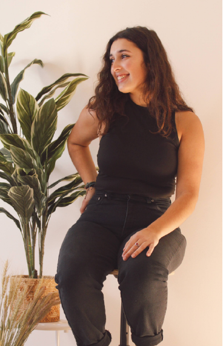

Audrey
is a detail-orieneted Graphic Designer, currently
enrolled at the University of Massachusetts Dartmouth,
working towards a degree in Graphic Design. Her
work includes publication design, logo design and
illustration giving her extensive experience in Adobe
Photoshop, Illustrator, InDesign, and Fresco. She also
has a love for sports, nature, fashion and travel.
Check out my Resume!